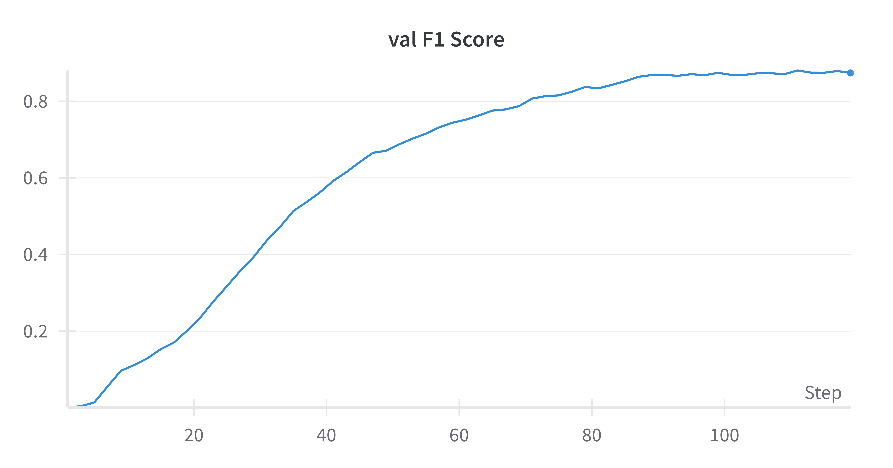

A Deep Learning Solution for Bird Species Classification
This project aims to create a robust and accurate bird species classification system using deep learning. The goal is to provide an accessible API that can identify bird species from images, making it valuable for ornithologists, bird watchers, and nature enthusiasts.
Built on ResNet-50, leveraging its deep architecture and residual connections for efficient feature learning and gradient flow.
Utilized pre-trained weights from ImageNet to bootstrap the learning process and achieve better generalization.
Implemented robust data augmentation including random flips, rotations, and color jittering to enhance model robustness.
The model was trained on the NABirds dataset from Cornell, which contains a comprehensive collection of North American bird species. Key training details include:
The model is served through a FastAPI-based REST API, providing:
The training process showed promising results with steady improvements in accuracy and consistent loss reduction. The model demonstrates robust performance across various bird species, with particular strength in distinguishing similar-looking species.
